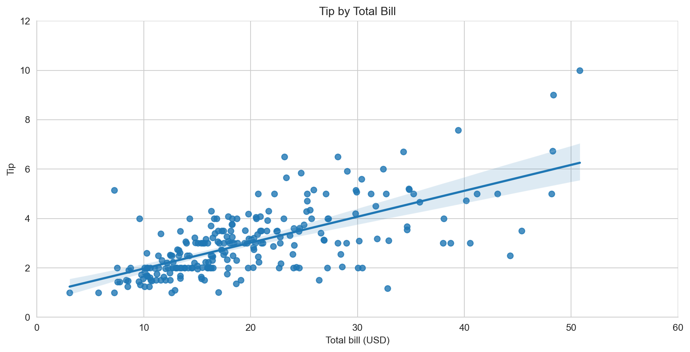

Quarto is a Markdown-based documentation system that lets you write documents in Markdown or Jupyter Notebooks, and render them to a variety of formats including HTML, PDF, PowerPoint, and more. You can also use Quarto to write books, create dashboards, and embed web applications with Observable and Shinylive.
Getting started with Quarto
Once you’ve created the space, click on the Files tab in the top right to take a look at the files which make up this Space. There are a couple of important files which you should pay attention to:
Dockerfile: This contains the system setup to build and serve the Quarto site on Hugging Face. You probably won’t need to change this file that often unless you need to add additional system dependencies or modify the Quarto version.
requirements.txt: This is where you should include any Python dependencies which you need for your website. These are installed when the Dockerfile builds.
The src directory contains the source files for the Quarto website. You can include Jupyter notebooks or markdown (.qmd or .md) files.
src/_quarto.yml defines the navigation for your website. If you want to add new pages or reorganize the existing ones, you’ll need to change this file.
Recommended Workflow
Clone the space locally
Install Quarto: In order to render your Quarto site without Docker, we recommend installing Quarto by following the instructions on the official Quarto website.
Install Quarto VS Code extension: The Quarto VS Code Extension includes a number of productivity tools including YAML Autocomplete, a preview button, and a visual editor. Quarto works great with VS Code, but the extension does make it easier to get the most out of Quarto.
Edit the site: The website files are contained in the src directory, and the site navigation is defined in src/_quarto.yml. Try editing these files and either clicking the “Preview” button in VS Code, or calling quarto preview src from the command line.
Learn more about Quarto: You can do a lot of things with Quarto, and they are all documented on the Quarto Website. In particular, you may be interested in:
Including Observable or Shiny applications in your Quarto site
Warning
It can take a couple of minutes for the Space to deploy to Hugging Face after the Docker build process completes. Two see your changes you will need to do two things:
Wait for your space’s status to go from ‘Building’ to ‘Running’(this is visible in the status bar above the Space)
Force-reload the web page by holding Shift and hitting the reload button in your browser.
Code Execution
One of the main virtues of Quarto is that it lets you combine code and text in a single document. By default, if you include a code chunk in your document, Quarto will execute that code and include the output in the rendered document. This is great for reproducibility and for creating documents that are always up-to-date. For example you can include code which generates a plot like this:
import seaborn as snsimport matplotlib.pyplot as plt# Sample datatips = sns.load_dataset("tips")# Create a seaborn plotsns.set_style("whitegrid")g = sns.lmplot(x="total_bill", y="tip", data=tips, aspect=2)g = g.set_axis_labels("Total bill (USD)", "Tip").set(xlim=(0, 60), ylim=(0, 12))plt.title("Tip by Total Bill")plt.show()

When the website is built the Python code will run and the output will be included in the document.
You can also include inline code to insert computed values into text. For example we can include the maximum tip value in the tips data frame like this: {python} tips['tip'].max(). You can control code execution, or freeze code output to capture the output of long running computations.
About the Open Source AI Cookbook
To provide a realistic example of how Quarto can help you organize long-form documentation, we’ve implemented the Hugging Face Open-Source AI Cookbook in Quarto. The Open-Source AI Cookbook is a collection of notebooks illustrating practical aspects of building AI applications and solving various machine learning tasks using open-source tools and models. You can read more about it, or contribute your own Notebook on the Github Repo